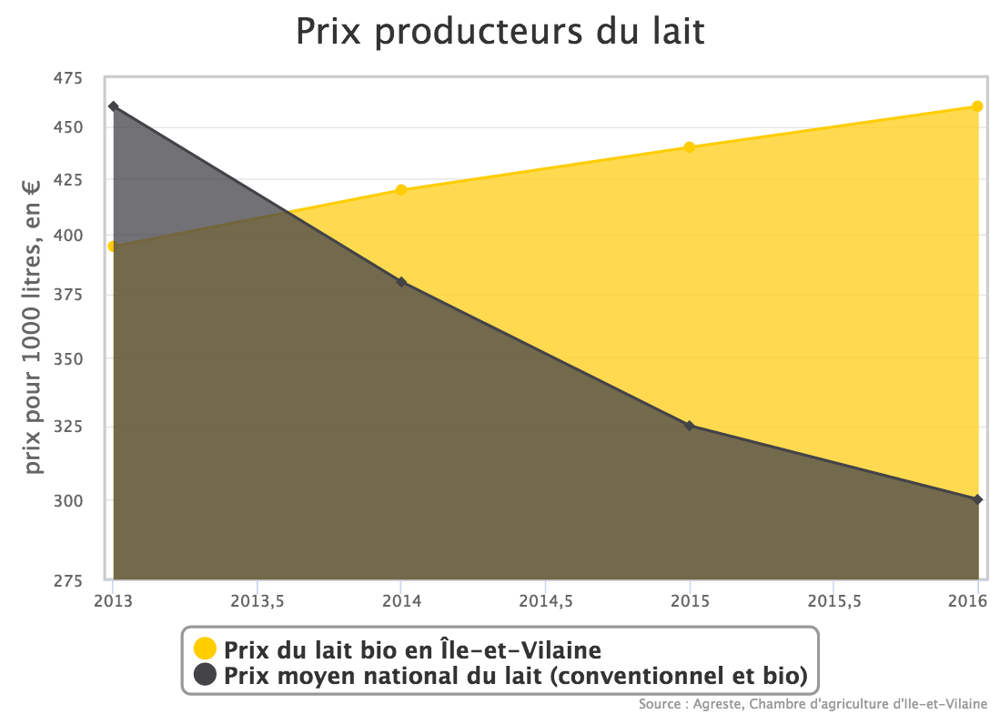

La conversion me rend inquiète ? « Non » grogne Marie* [prénom changé] en souriant, quatre tubes de trayeuse à air comprimé dans les mains. Elle et son mari y pensent maintenant depuis quelques années. « En fait, on s’est réellement posé la question du bio il y a deux trois ans, lors de la grosse crise du prix du lait. On s’est rendu compte, poursuit-elle, maintenant en train de désinfecter les pis de ses Prim’Holstein, qu’avec une structure importante, on vivait peu tout en faisant vivre beaucoup de gens. »
Sebastien a eu la chance d’être bien accompagné, il a fait des formations avec le CETA et avec Agrobio [groupement national d’experts agronomes et d’agriculteurs bio, le groupement d’Ille et Villaine est le premier de France en nombre d’adhérents].
« on vivait peu, tout en faisant vivre beaucoup de gens. »
On pense qu'on a fait le bon choix. Pourtant on a tous les deux des parents qui sont dedans. C'était une question de prix du lait, aujourd'hui 30 euros de plus, ça ne couvre pas les charges, aucun intérêt de continuer dans ce modèle la parce qu'il faut qu'il nous en reste à nous aussi hein (rire)
Jusqu’en 2012, la demande en lait bio n’était pas suffisante pour assurer un écoulement stable de la production, faisant craindre aux agriculteurs ce qui avait pu se pratiquer jusqu’en 2004: un déclassement du lait biologique en lait normal, afin d’être certain de son écoulement. Mais depuis 2012, les choses changent et la demande est bien là, la question aujourd’hui est : comment assurer l’approvisionnement des consommateurs, qui sont 7,6% à acheter du bio régulièrement
Pour l’instant les prairies de Sebastien Bouvet représentent moins de 60 hectares, soit mois de la moitié de sa surface totale de 125ha. Le reste est principalement constitué de céréales.
Mais toutes ne sont pas destinées à être vendues, il en conserve une certaine quantité pour nourrir son cheptel de 45 vaches. Il ne récolte que l’épis du maïs, laissant la tige sur place, pour régénérer le sol en matière organique. Il conserve son maïs en ensilage, c’est à dire qu’il broie le tout en copeaux d’un peu moins d’un centimètre, « sinon les vaches ne digèrent pas », et stocke le tout sous une bâche lestée, en vue d’avoir du fourrage pour l’hiver. C’est une sorte de foin humide (à 40%, contre 15% pour le foin traditionnel).
Le problème de son ensilage ? Il ne peut plus continuer à en faire tant lorsqu’il sera en bio, parce que contrairement à l’herbe, nourrir les bêtes avec les rend «déficitaire en azote », explique Sebastien Bouvet, alors que la paume de sa main est recouverte du dît ensilage. « Du coup on est obligé d'acheter du tourteau de colza. » C’est pour cette raison qu’il implantera beaucoup plus d’herbe maximisant ainsi la surface accessible en pâturage.
Les prairies jeunes c'est plus productif. Entre 5 et 7 ans en prairie.
Claude Bourguignon est un micro-biologiste des sols, anciens membre de l'INRA, qu'il a quitté au début des années 90. Il est l'importateur en France de la technique brésilienne du semis direct sous couvert. Virulent à l'égard des chambres d'agriculture et de l'INRA, il apprécie malgré tout le changement de mentalité qui s'est opéré ces dernières années.
Julien Auriach